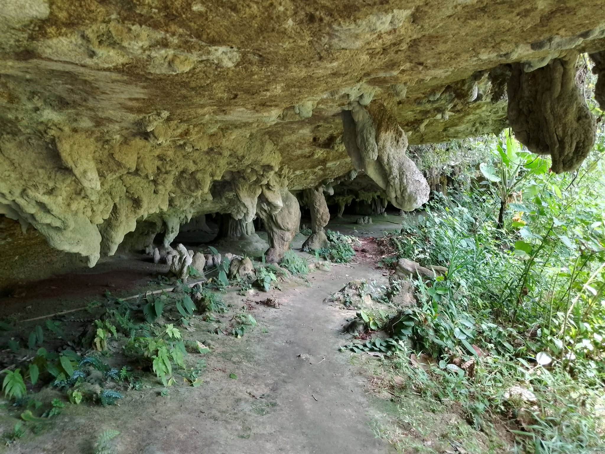
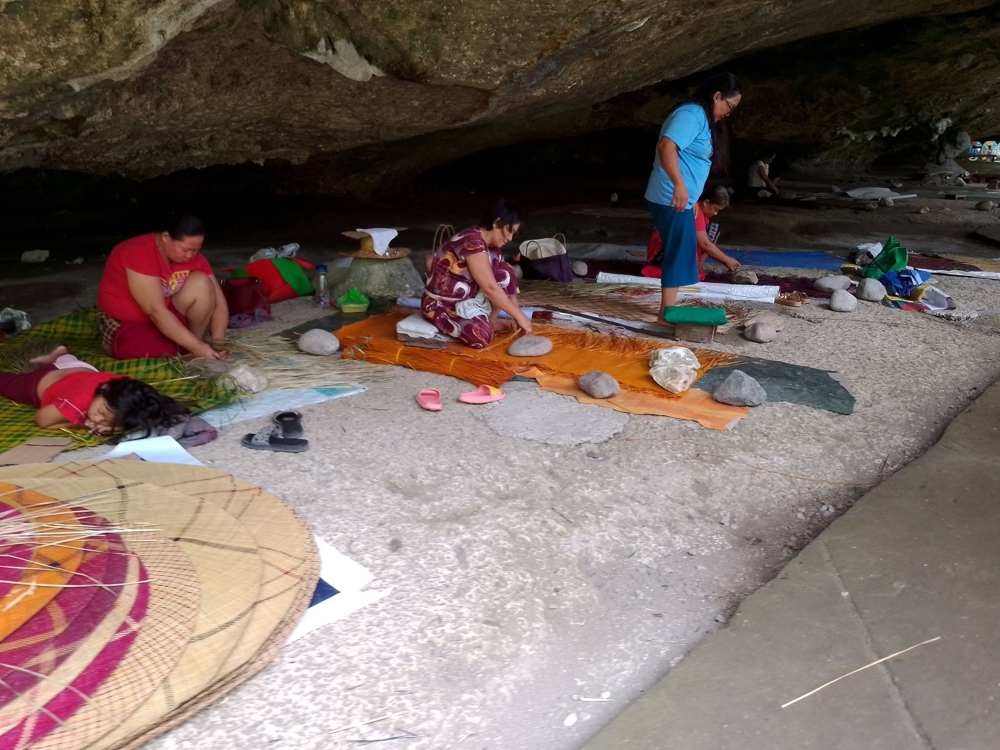
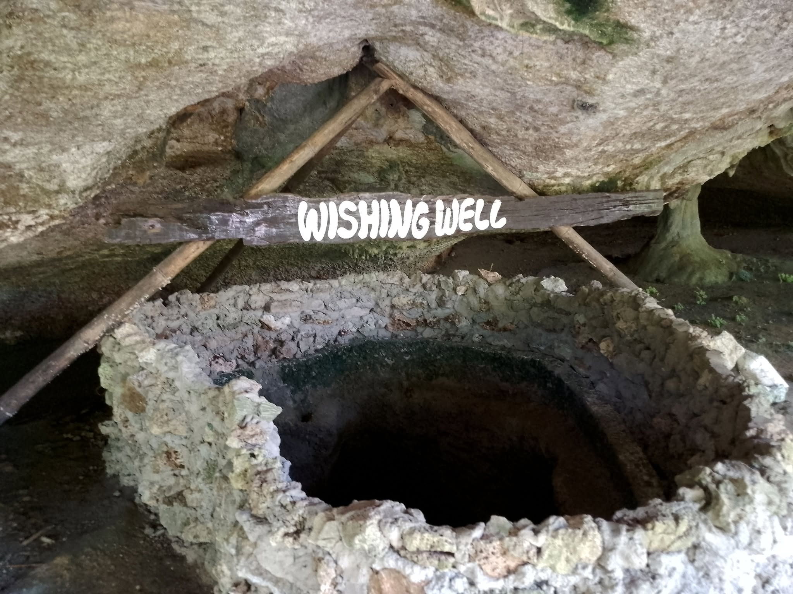

Saob Cave
Saob Cave features natural rock formations and hanging stalactites that contribute to its ancient vibes. The rocky terrain may be challenging to trek, but the beautiful rock formations make the venture worthwhile.

BANWA
The Basiao Native Weavers Association (BANWA) is comprised of native weavers based in Barangay Basiao. The cool environment of Saob Cave provides an ideal workplace for the weavers, allowing them to craft their renowned banig products.

Saob Cave Wishing Well
The wishing well located near BANWA's workplace is said to grant wishes to those who use it. Many believe that the well has powers, and it's rumored that a large fish once inhabited it.